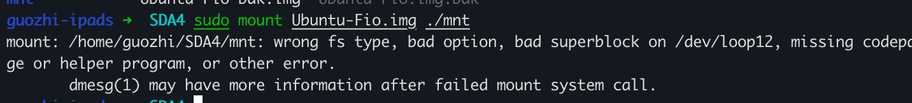
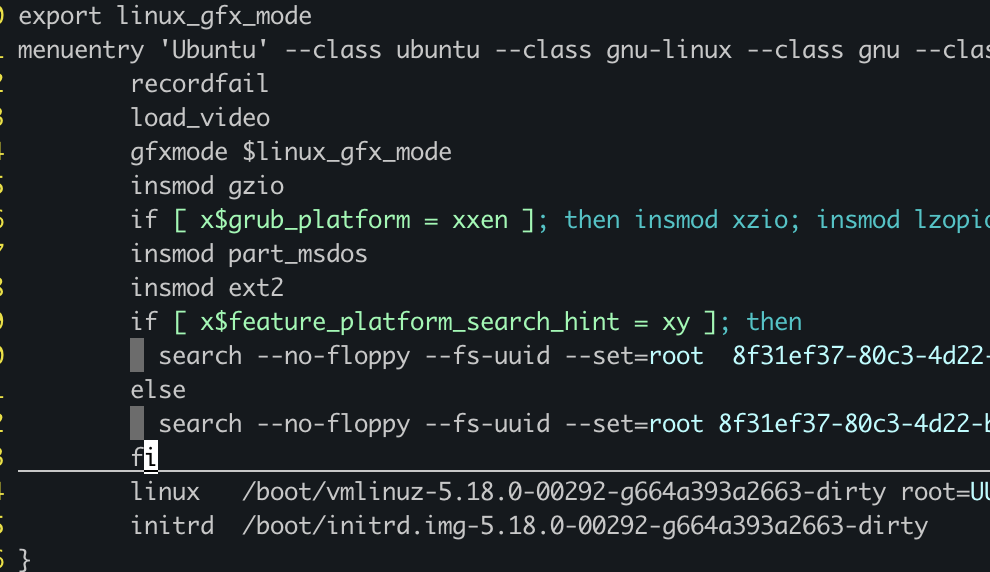
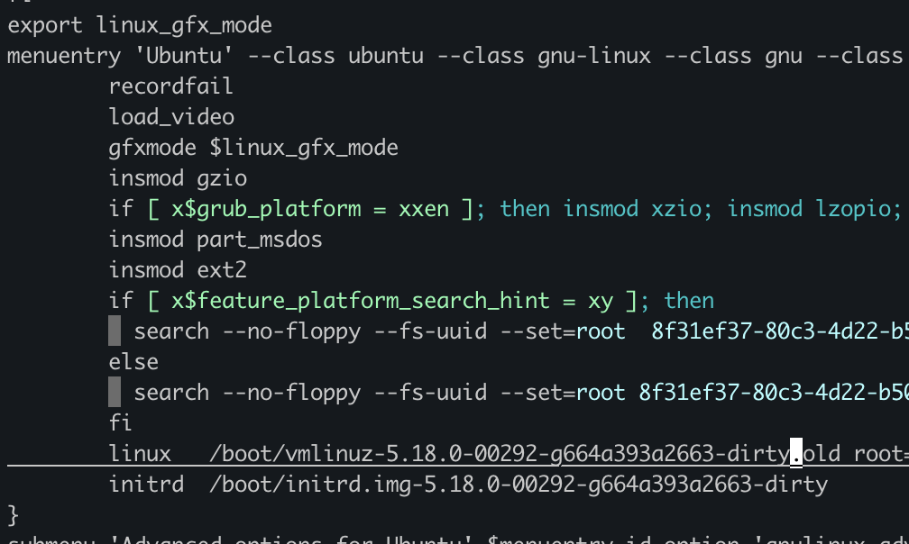
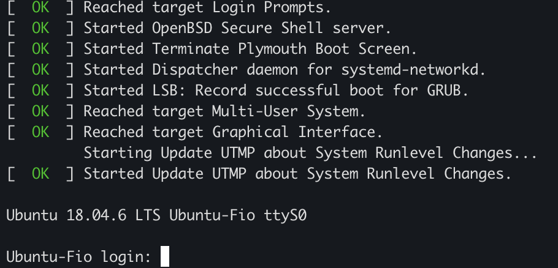

记录一次将虚拟机kernel写坏之后的修复过程
问题
我在修改虚拟机的kernel后，引入了bug，导致虚拟机启动之后，不能够通过ssh连接进入虚拟机。更糟糕的是我的ubuntu虚拟机没有配置console输出，因此我也不能够通过console进入虚拟机。因为没有办法进入虚拟机，我需要将虚拟机当前有bug的kernel切换成一个能够启动的kernel。
过程
向学长咨询了这个问题之后，他告诉我可以通过mount这个虚拟机的image来解决。于是我开始尝试这个方案。
mount image
如果直接mount这个kernel image会出现下面这个报错。原因应该是该image文件格式的问题，这个image包含了虚拟机的boot分区，所以上面不是单纯的ext4文件系统。

qemu-nbd
通过查找，我发现了可以使用qemu提供的工具qemu-nbd来mount虚拟机的这个image。
使用nbd工具首先需要在host操作系统中安装nbd kernel module:
sudo modprobe nbd max_part=16
上面这个命令在devfs中建立了16个nbd。
首先将这个image attach到一个nbd中比如/dev/nbd0:
sudo ./qemu/build/qemu-nbd -c /dev/nbd0 ~/SDA4/Ubuntu-Fio.img
接着mount nbd设备到一个目录中
sudo mount /dev/nbd0p1 ./mnt
进入./mnt就能够看到虚拟机里面的文件。

修改grub
在能够读写虚拟机的image文件后，修改它里面的grub.cfg来用其他正常的kernel启动虚拟机。
如下图所示，将vmlinuz从xxx.dirty修改为xxx.dirty.old(代表着我们上一次make install生成的kernel之前那个版本的kernel)。保存修改 

重新启动
重新启动虚拟机前需要umount nbd:
sudo umount /dev/nbd0p1
再detatch nbd:
sudo ./qemu/build/qemu-nbd -d /dev/nbd0
接着就能够通过virsh start重新启动虚拟机了, 等待几秒发现ssh能够重新登录进虚拟机，虚拟机又能够正常使用。
虚拟机开启console
因为写坏kernel可能经常发生，为了让下次方便恢复，还是需要为虚拟机开启console。
有两种方式可以达到目的:
在虚拟机中(Ubuntu)启动服务:
sudo systemctl enable --now serial-getty@ttyS0.service
或者在虚拟机(Ubuntu)的/etc/default/grub中修改GRUB_CMDLINE_LINUX_DEFAULT为
GRUB_CMDLINE_LINUX_DEFAULT="console=tty0 console=ttyS0,115200n8"
完成后退出虚拟机，之后用sudo virsh start $(Domain) --console 启动虚拟机，就能够直接看到console输出了。

虚拟机支持console选择kernel
依照下面代码修改/etc/default/grub可以使得在console中能够选择kernel再启动
GRUB_TIMEOUT_STYLE=menu
GRUB_TIMEOUT=10
修改grub文件之后要sudo update-grub将修改更新到boot分区。
console效果如下:

到这一步如果再将kernel写坏导致不能够ssh或者不能够启动成功，直接重新启动并在console中更换kernel就行。